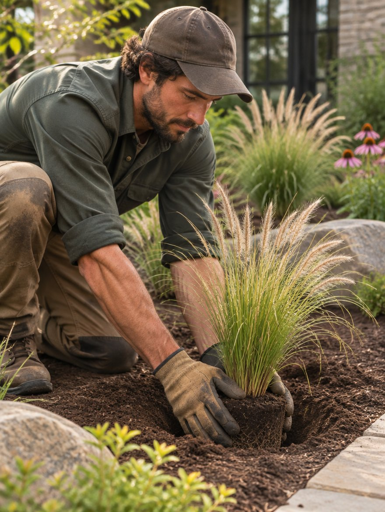
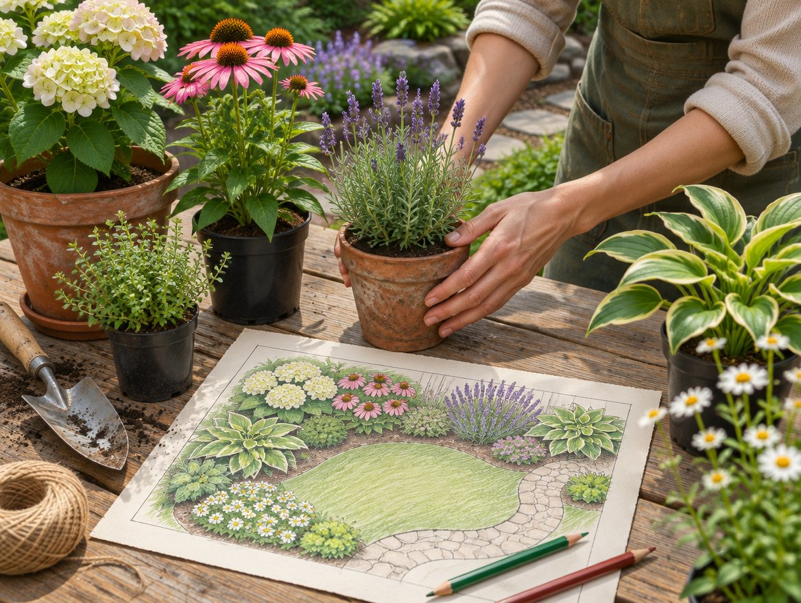
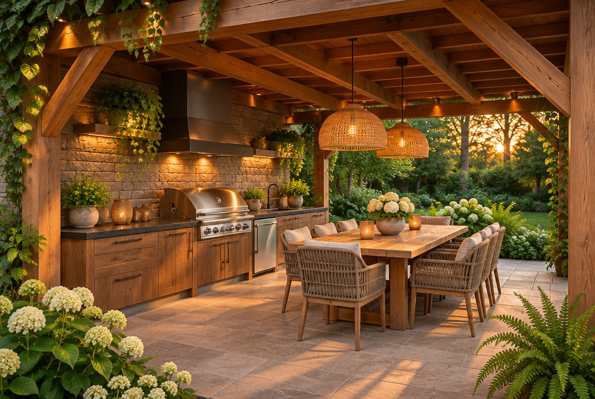

← Back to Our WorkConcept website designed by VERO DigitalGet a Site Like This
← Back to Our WorkConcept website designed by VERO DigitalGet a Site Like ThisWildacre designs, builds and cares for gardens, patios and outdoor living spaces across Lakemont County, with a studio’s eye for detail and a gardener’s patience.


We believe a great landscape should feel like it was always meant to be there: rooted in place, easy to live with and beautiful in every season.

Wildacre Landscape Studio brings design and craftsmanship together. We start by understanding how you want to use your outdoor space, then shape a plan around light, soil, views and the way you live.
From planting plans to stone patios and ongoing garden care, our team builds every detail with intention.
Meet the studio
Planting plans, layouts and 3D concepts that shape your property into a cohesive, livable landscape.
Start a designNatural stone patios, walkways, walls and steps, built on proper bases to last for decades.
Plan a patio

Outdoor kitchens, fire features and dining areas designed for long evenings outside.
Design your spaceSeasonal maintenance, pruning and lawn care that keeps your landscape looking its best all year.
Ask about care plans
Every project starts with a plan that fits your home, your site and your style.
We select plants suited to Lakemont’s soil, sun and seasons.
Proper bases, drainage and materials for hardscape that lasts.
The people who design your landscape oversee how it’s built.
We walk your property together and talk through goals, budget and timing.
We prepare a design and written proposal for your review.
Our crew installs your landscape with care and clear communication.
Optional garden care keeps everything healthy as it grows in.
“They listened to how we actually use our backyard and designed around it. Two summers in, the fire terrace is where we spend every evening.”
“Wildacre turned a tired lawn into the cottage garden I’ve always wanted. Something is blooming from April to October.”
“From the first sketch to the final planting, the whole team was thoughtful, tidy and on schedule. The outdoor kitchen feels like another room of the house.”
We take on design projects throughout the region and offer garden care within our core service area. Select a town to see it on the map.
We start with an on-site consultation, then prepare a design and written proposal. Once approved, we schedule your build.
Share a little about your property and we’ll be in touch to arrange a consultation.
(555) 010-6630 studio@wildacrestudio.comWildacre designs, builds and cares for gardens, patios and outdoor living spaces across Lakemont County, with a studio’s eye for detail and a gardener’s patience.
We believe a great landscape should feel like it was always meant to be there: rooted in place, easy to live with and beautiful in every season.
Wildacre Landscape Studio brings design and craftsmanship together. We start by understanding how you want to use your outdoor space, then shape a plan around light, soil, views and the way you live.
From planting plans to stone patios and ongoing garden care, our team builds every detail with intention.
Meet the studioPlanting plans, layouts and 3D concepts that shape your property into a cohesive, livable landscape.
Start a designNatural stone patios, walkways, walls and steps, built on proper bases to last for decades.
Plan a patioOutdoor kitchens, fire features and dining areas designed for long evenings outside.
Design your spaceSeasonal maintenance, pruning and lawn care that keeps your landscape looking its best all year.
Ask about care plans{{w.d}}
{{s.d}}
“{{r.q}}”
We take on design projects throughout the region and offer garden care within our core service area. Select a town to see it on the map.
{{f.a}}
Share a little about your property and we’ll be in touch to arrange a consultation.
(555) 010-6630 studio@wildacrestudio.comWe’ll be in touch shortly to arrange your consultation.